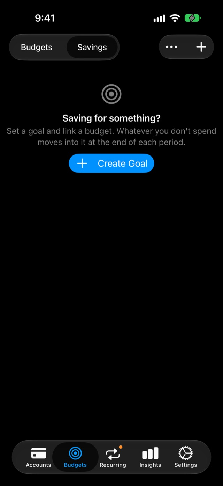
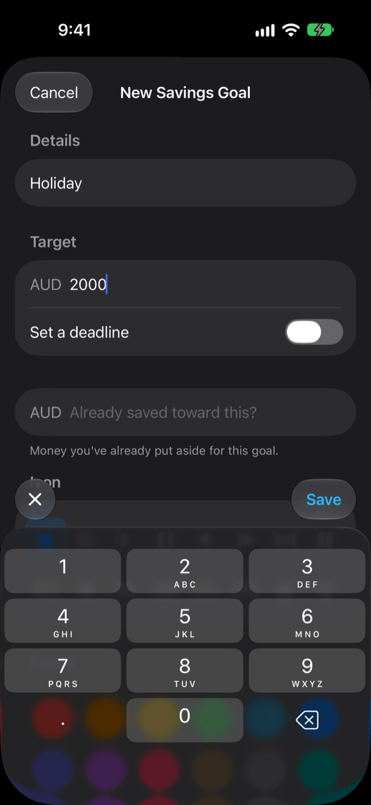
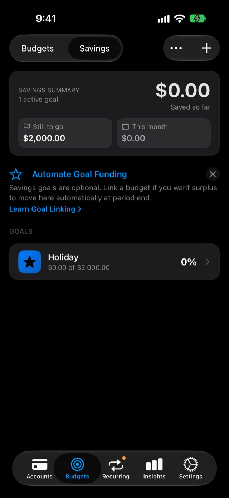
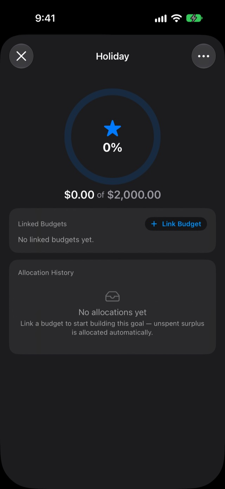
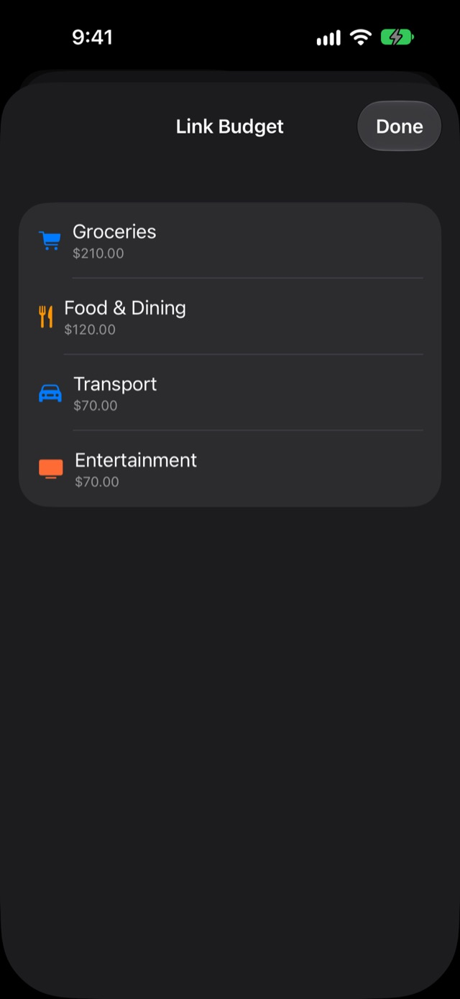
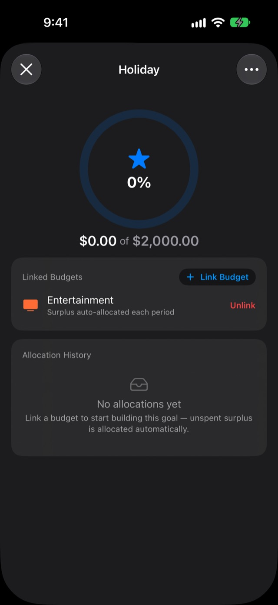

Create a savings goal and link a budget
A goal gives the money you do not spend somewhere to go. Link a budget to a goal and whatever is left at the end of each period moves into it.
Step by step
One screen at a time
Open Savings
On the Budgets tab, tap Savings at the top, then Create Goal.

Name it and set a target
Enter a name and the amount you are aiming for. You can also set a deadline, enter what you have already saved, and pick an icon and colour.
Tap Save.

Your goal appears in the list
The summary at the top shows what you have saved across all goals, what is still to go, and what was added this month.

Open the goal and tap Link Budget
Tap the goal to open it. Under Linked Budgets, tap Link Budget.

Choose a budget
Pick the budget whose leftover money should go to this goal. A budget you usually underspend is a good first choice.

Leftover money now moves in by itself
At the end of each budget period, what you did not spend is added to the goal and listed under Allocation History.
You can link more than one budget, and tap Unlink at any time.



What to do next
Related tips and guides
Goals are optional. Budgets work the same with or without them.
Start with one goal. It is easier to see progress when the money is going to one place.
Not sure which budget has spare money? Read Today's balance shows how to check each budget.